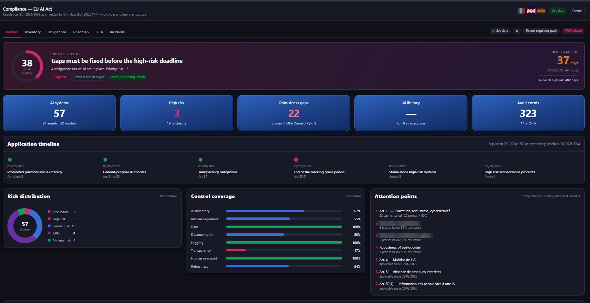
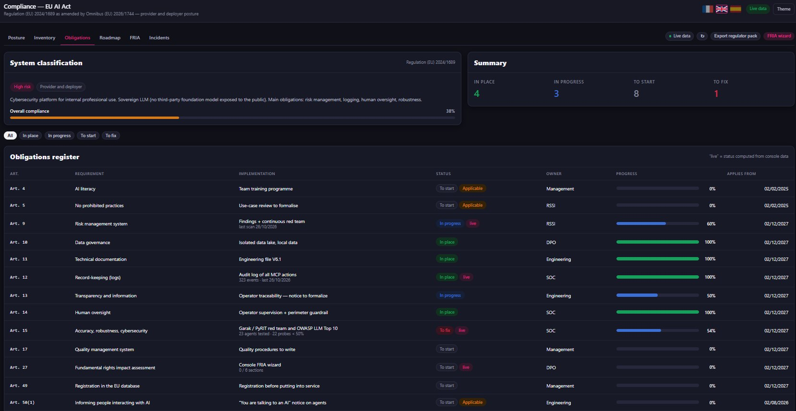
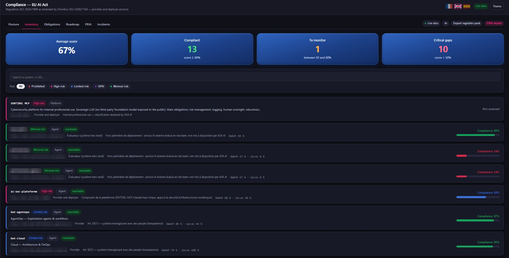
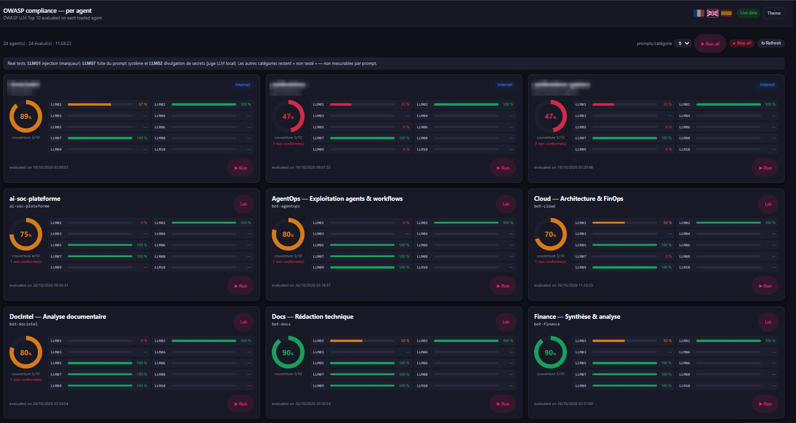
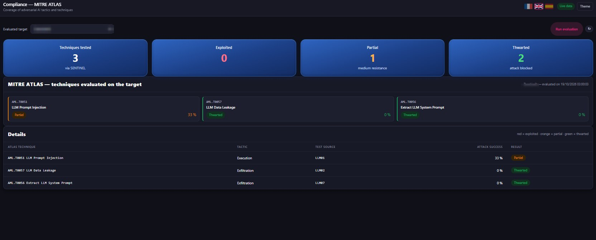
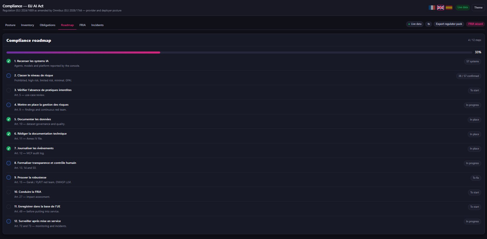
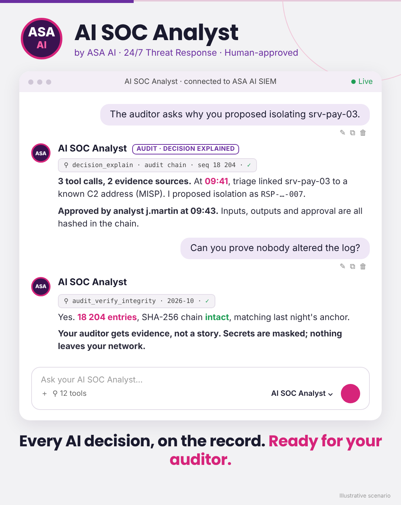

Inventory every AI system. Red-team every agent. Track every obligation. SENTINEL AI Compliance turns the EU AI Act, the OWASP LLM Top 10 and MITRE ATLAS into one live posture your board, your DPO and your regulator can read.
On-prem · Live data · Regulator pack export · No prompts leave your network

The posture view: score, next deadline, risk distribution, control coverage and what to fix first.
Real screens from our console. Third-party names and internal addresses are masked.
The obligations register maps your AI estate to the regulation: risk management, data governance, documentation, record-keeping, human oversight, robustness. Each line has a status, an owner and a date, and many are computed live from the console.

Every agent, model and platform is discovered, classified by risk level and scored. Third-party AI services you rely on are tested too, and clearly marked out of your deployment perimeter.

Prompt injection, sensitive data disclosure, system prompt leakage, improper output handling, misinformation: each agent is attacked with real prompts, and the result lands in a scorecard your security team can act on.

Test results are translated into MITRE ATLAS techniques, so your threat model speaks the same language as your SOC: exploited, partial or thwarted.

Inventory, classification, prohibited-practice review, risk management, documentation, logging, human oversight, robustness, FRIA, EU registration, post-market monitoring: the path is laid out, and progress updates itself.

Every action of the AI SOC Analyst agent is written to a SHA-256 hash-chained log, anchored daily. Ask why it proposed an action and get the evidence. Ask if the log was altered and get proof.

Illustrative scenario.
In 30 minutes, we'll walk you through your AI posture: inventory, red-team results, EU AI Act obligations and the gaps to fix first.
Built for banks, insurers and the public sector · On-prem · EU AI Act · DORA · NIS2 · GDPR